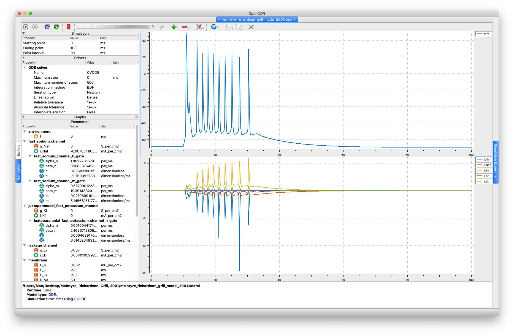

Encoded in CellML by Alan Garny
Auckland Bioengineering Institute, University of Auckland
This model has been encoded using the information available in the published article. Only the nodal part of the model has been implemented:
Cn as the capacitance and iNaf, iNap, iKs and iLk as the currents involved in the membrane dynamics.
We also use iKf, but by default its conductance is set to 0 S/cm2.
The authors mention that, based on experimental data, the value for gKf should be about 0.02 S/cm2, hence they tested their model using a range of values between 0.01 and 0.04 S/cm2.
Vm) and the different gating variables (m, h, p, s and n) are provided.
So, we set Vm to -80 mV (i.e. the resting potential used in the internodal segments) and the different gating variables to 0.
From there, the model was run without any stimulus and for several days worth of simulation to reach steady state.
0.1 and 3 ms.
So, we arbitrarily went for 0.5 ms.
As for the stimulus amplitude, we went for the smallest value that yields an action potential (actually, a series of action potentials), i.e. 0.05 mA/cm2.
(A stimulus amplitude of 0.04 mA/cm2 will just result in a blip.)
|  |
| Output of running the SED-ML file in OpenCOR. |